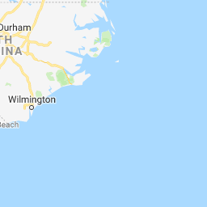
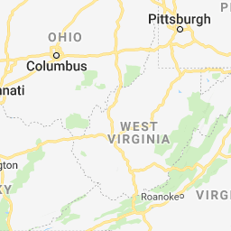
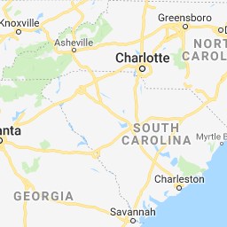
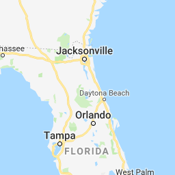
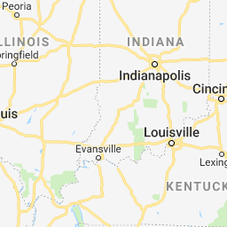
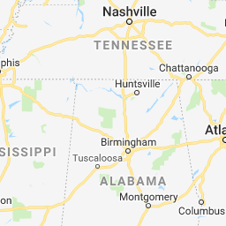
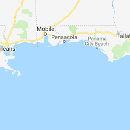

Open full screen to view more
Map of North Carolina fire departments.
Collapse map legend
Map details
Copy map
Print map
Zoom to viewport
Embed map
Download KML
312 views
Normal
50-210 Community Fire Department, Inc.
AASF#2 North Carolina Army National Guard Fire Department
Aberdeen Fire Department
Acme-Delco-Riegelwood Fire-Rescue, Inc
Advance Fire Department, Inc.
Agriculture Center Volunteer Fire Department
Ahoskie Fire Department
Ahoskie Rural Fire Department
Alamance Community Fire District, Inc.
Alarka Volunteer Fire Department Inc.
Albemarle Fire Department
Albert J. Ellis Airport Fire Department
Albertson Volunteer Fire Department
Alexis Volunteer Fire Department
Allen Volunteer Fire Department
Allen's Crossroads Volunteer Fire Department
Allensville Volunteer Fire Department
Altamahaw-Ossipee Fire Department
Ammon Volunteer Fire Department
Anderson Creek Emergency Services
Anderson Township Volunteer Fire Department
Andrews Fire Department
Angier & Black River Fire Department
Antioch Fire Department, Inc.
Antioch Rural Fire Department
Apex Fire Department
Aquadale Rural Volunteer Fire Department, Inc.
Arapahoe Volunteer Fire-Rescue, Inc.
Arba Rural Fire Association, Inc.
Arcadia-Reedy Creek-Hampton Volunteer Fire & Rescue Department
Archer Lodge Fire Department
Arlington Fire & Rescue
Arrington Volunteer Fire Department
Asheboro Fire Department
Asheville Fire and Rescue Department
Asheville Regional Airport Department of Public Safety
Ashford North Cove Volunteer Fire Department
Askewville Volunteer Fire Department
Atkinson Fire Department
Atlantic Beach Fire Department
Atwell Township Volunteer Fire Department Station 40
Aulander Municipal Volunteer Fire Department
Aurora Volunteer Fire Department
Austin Volunteer Fire Department
Avon Volunteer Fire Department
Ayden Fire Department
Back Swamp Volunteer Fire Department
Badin Lake Volunteer Fire Department, Inc.
Badin Volunteer Fire Department
Bahama Volunteer Fire Rescue EMS Company, Inc.
Bailey - Green Hornet Fire Department
Bakers Volunteer Fire & Rescue Department, Inc.
Bakersville Volunteer Fire and Rescue
Bald Head Island Fire-Rescue
Balsam - Willets - Ochre Hill Volunteer Fire Department
Balsam Grove Volunteer Fire Department
Bandys Crossroads Volunteer Fire Department
Bannertown Volunteer Fire Department
Barnardsville Volunteer Fire Department Inc.
Bat Cave Volunteer Fire & Rescue Department
Bath Volunteer Fire Department
Bay Leaf Volunteer Fire Department
Bay Tree Lakes Volunteer Fire Department
Bear Creek Volunteer Fire Department
Bear Grass Fire Rescue
Bearpond Fire Department
Beaufort Fire Department
Beaver Dam Volunteer Fire Department
Beaver Lane Volunteer Rescue and Fire Department, Inc.
Beaverdam Fire Department
Beech Mountain Volunteer Fire Department
Beeson Crossroads Volunteer Fire & Rescue, Inc.
Belews Creek Volunteer Fire & Rescue Department, Inc.
Belgrade Volunteer Fire Department, Inc.
Belhaven Fire / Rescue Department
Bell Arthur Fire Department
Bellview Volunteer Fire Department Inc.
Belvoir Volunteer Fire Department
Benhaven Emergency Services
Bennett Volunteer Fire Department
Benson Fire Department
Bentonville Volunteer Fire Department Inc
Bethany Fire Department
Bethany Rural Fire Department
Bethany Rural Volunteer Fire Department of Johnston County
Bethel Community Fire Protection Association, Inc.
Bethesda Fire Department
Bethlehem Volunteer Fire Department
Beulaville Volunteer Fire Department
Big Pine Volunteer Fire Department, Inc.
Bill's Creek Volunteer Fire Department
Biscoe Fire Department
Black Jack Volunteer Fire Department
Black Mountain Fire Department
Blackman's Crossroads Volunteer Fire Department
Bladenboro Fire Department
Blounts Creek Volunteer Fire Department
Blowing Rock Fire Department
Blue Jay Volunteer Fire Department
Blue Ridge Fire & Rescue, Inc.
Boger City Volunteer Fire Department
Boiling Spring Lakes Fire Rescue
Boiling Springs Rural Volunteer Fire Department
Bolton Volunteer Fire and Rescue Department Inc.
Bonlee Fire Department
Boone Fire Department
Boonville Community Volunteer Fire Department
Bostian Heights Fire Department, Inc.
Bostic Volunteer Fire Department
Brassfield Volunteer Fire Department
Brasstown Fire Department
Brendletown Fire & Rescue
Brevard Fire Department
Brinkleyville Volunteer Fire Department
Britts Volunteer Fire Department
Broad & Gales Creek Fire Department
Broad River Volunteer Fire & Rescue Department
Broadway Volunteer Fire Department
Brushy Mountain Volunteer Fire Department, Inc.
Buck Shoals Volunteer Fire Department
Buckhead Volunteer Fire Department and Rescue Squad
Buies Creek Volunteer Fire Department, Inc.
Bunn Rural Fire Association Inc.
Burgaw Fire Department
Burlington Fire Department
Burnsville Fire Department
Burnsville Fire, Rescue and Ambulance Service
Burnt Swamp Philadelphus Fire Volunteer Department
Butner Public Safety
Calabash Fire Department, Inc
Calypso Volunteer Fire Department, Inc.
Cameron Rural Fire Department, Inc.
Camp Lejeune Fire & Emergency Services
Canada Volunteer Fire Department, Inc.
Candor Fire Department
Canton Fire Department
Cape Fear Rural Fire Department
Carolina Beach Fire Department
Carolina Township Volunteer Fire Department
Carrboro Fire-Rescue Department
Carthage Fire Department
Cary Fire Department
Casar Volunteer Fire Department
Cashiers Glenville Volunteer Fire Department
Castalia Volunteer Fire Department
Castle Hayne Volunteer Fire & Rescue
Castoria Rural Fire Association Inc,
Casville Volunteer Fire Department, Inc.
Catawba Fire Department
Cedar Grove Fire Department
Cedar Island Volunteer Fire Department
Cedar Mountain Fire Rescue, Inc.
Ceffo Volunteer Fire and Rescue Department Inc.
Center Hill Cross Roads Fire Department
Center Pigeon Volunteer Fire Department, Inc.
Central Alexander Fire Department
Central Fire Department, Inc.
Central School Volunteer Fire Department
Central Surry Volunteer Fire Department
Cerro Gordo Fire & Rescue Department
Chadbourn Fire and Rescue
Chapel Hill Fire Department
Charlotte Fire Department
Cherry Grove Volunteer Fire Department
Cherry Lane Volunteer Fire Department
Cherry Mountain Volunteer Fire Department
Cherryville Fire Department
Chesterfield Fire Rescue
Chicamacomico Banks Fire Department
Chimney Rock Volunteer Fire Department, Inc.
Chinquapin Volunteer Fire and Rescue, Inc.
Chocowinity Volunteer Fire Department
Churchill Five Forks Volunteer Fire Department
Churchland Fire Department
City of Belmont Fire Department
City of Clinton Fire Department
City of Conover Fire Department
City of Henderson Fire Department
City of Mebane Fire Department
City of Randleman Fire Department
City of Reidsville Fire Department
City of Roxboro Fire Department
City View Volunteer Fire Department, Inc.
Civietown Volunteer Fire and Rescue
Claremont Fire Department
Clarks Chapel Fire & Rescue Department, Inc.
Clarks Neck Volunteer Fire Department, Inc.
Clarkton Fire Department, Inc.
Clay County Fire & Rescue Squad, Inc.
Clayton Fire Department
Clearmont Volunteer Fire Department
Clement Volunteer Fire Department, Inc.
Clemmons Fire Department, Inc.
Cleveland Community Volunteer Fire Department
Cleveland County Volunteer Fire Department, Inc.
Cleveland Fire Department
Cliffside Area Fire Department
Climax Fire Department
Clyde Fire Department
Coats-Grove Fire & Rescue, Inc.
Cokesbury Volunteer Fire Department
Cold Water Fire & Rescue
Colerain Volunteer Fire Department
Colington Volunteer Fire Department
Collettsville Fire & Rescue
Columbus Fire Department
Community Volunteer Fire Department
Como Volunteer Fire Department
Concord Department of Fire and Life Safety
Conetoe Volunteer Fire/EMS Department
Connestee Fire Rescue, Inc.
Conway Volunteer Fire Department, Inc.
Cook Community Volunteer Fire Department
Cooksville Fire Department
Cool Springs Volunteer Fire Department
Cooleemee Volunteer Fire Department
Coopers Volunteer Fire & Rescue
Corinth Volunteer Fire Department
Corinth-Holders Fire Department
Cornatzer-Dulin Volunteer Fire Department
Cornelius-Lemley Fire Rescue
Cornwall Volunteer Fire Department
Corolla Fire and Rescue Squad, Inc.
Cotton Volunteer Fire Department
Country Volunteer Fire Department
County Line Volunteer Fire Department
Courtney Volunteer Fire Department Inc.
Cove City Fire & Rescue
Cove Creek Volunteer Fire Department, Inc.
Cowee Volunteer Fire/ Rescue, Inc.
Crains Creek Volunteer Fire Department, Inc.
Cramerton Volunteer Fire Department
Creedmoor Volunteer Fire Department
Crestline Volunteer Fire Department
Creswell Volunteer Fire Department, Inc
Crossnore Volunteer Fire Department
Crossroads Volunteer Fire Department, Inc.
Crouse Volunteer Fire Department, Inc.
Crowders Mountain Volunteer Fire/ Rescue
Cruso Volunteer Fire Department
Cullasaja Gorge Fire & Rescue
Cullowhee Volunteer Fire Department
Cumberland Road Volunteer Fire Department
Currituck County Department of Fire - Emergency Medical Services
Cypress Pointe Fire/Rescue
Dana Fire & Rescue, Inc.
Darlington Volunteer Fire Department
Davidson Fire Department
Davie Community Volunteer Fire Department
Davie-Center Volunteer Fire Department, Inc.
Deep Branch Volunteer Fire Department
Deep Gap Volunteer Fire Department
Deep River Fire Department
Deep Run Volunteer Fire Department, Inc.
Denton Fire Department
Denver Volunteer Fire Department, Inc.
Derby Volunteer Fire Department
Dobson Fire Department
Double Creek Volunteer Fire Department
Double Island Volunteer Fire Department
Dover Volunteer Fire Department
Draper Volunteer Fire Department
Drewry Volunteer Fire Department, Inc.
Drexel Fire Department
Drowning Creek Volunteer Fire Department
Dublin Volunteer Fire Department
Duck Fire Department
Dunn Emergency Services, Inc.
Durants Neck Volunteer Fire Department
Durham Fire Department
E.M. Holt Volunteer Fire Department
Eagle Springs Volunteer Fire Department, Inc.
East Bend Volunteer Fire Department
East Gaston Volunteer Fire Department
East Howellsville Fire Department
East Lincoln Fire Department
East Nash Fire Department
East Side Fire Department
East Side Volunteer Fire Department, Inc.
East Spencer Fire Department Station 47
Eastern Band of Cherokee Indians, Tribal Gov.
Eastern Pines Fire Rescue
Eastern Wake Fire-Rescue Department, Inc.
Eastover Volunteer Fire Department
Eastwood Volunteer Fire Department
Ebbs Chapel Fire Department
Ebenezer Fire Department
Eden Fire Department
Edenton Fire Department
Edneyville Fire & Rescue
Efland Volunteer Fire Department
Egypt-Ramseytown Volunteer Fire Department
El-Roy Volunteer Firefighters, Inc.
Elevation Fire Department
Eli Whitney Volunteer Fire Department
Elizabeth City Fire Department
Elizabethtown Fire Department
Elk Park Volunteer Fire Department
Elkin Fire Department
Ellenboro Fire Department
Ellendale Community Volunteer Fire Department
Ellis Cross Country Fire Department
Elon Fire-Rescue
Emerald Isle Fire Department
Enfield Fire Department
Engelhard Volunteer Fire Department, Inc.
Enka-Candler Fire and Rescue, Inc.
Eno Fire and Emergency Services, Inc
Enochville Fire & Rescue Department, Inc.
Enola Volunteer Fire Department
Erwin Fire Department & Rescue Squad, Inc.
Etowah Horse Shoe Volunteer Fire and Rescue
Eure Volunteer Fire Department, Inc.
Evans Crossroads Volunteer Fire Department
Fair Grove Fire Department Station 43
Fairfield Mountains Fire Department
Fairfield Volunteer Fire Department, Inc.
Fairmont Department of Public Safety - Fire Division
Fairview Fire & Rescue
Fairview Fire Department
Fairview Rural Fire Department
Faison Fire & Rescue Inc.
Falkland Volunteer Fire Department
Fall Creek Volunteer Fire Department
Fallston Community Volunteer Fire Department, Inc.
Farmer Volunteer Fire Department
Farmington Volunteer Fire Department
Farmville Fire Department
Faro Volunteer Fire Department
Faucette Township Volunteer Fire Department
Fayetteville Fire/Emergency Management Department
Federal Point Fire & Rescue, Inc.
Ferrells Fire & Rescue
Fines Creek Volunteer Fire Department
Fire Department - City of King
Fire District #13, Inc
Fire District 28
Flat Branch Volunteer Fire Department
Flatwoods Community Fire Department
Fleetwood Volunteer Fire & Rescue
Fletcher Fire and Rescue Department
Florence & Whortonsville Volunteer Fire Department
Flowes Store Volunteer Fire Department
Forbush Volunteer Fire Department
Forest City Fire Department
Forest Hill Volunteer Fire Department and Rescue
Fork Mountain Fire Department & Rescue Squad, Non Profit
Forsyth County Fire Department
Fort Bragg Fire and Emergency Services
Fort Run Rural Fire & EMS Association Inc.
Foscoe Fire Department
Fountain Rural Fire Association
Fountaintown Volunteer Fire Department
Francisco Volunteer Fire Department Inc.
Frank Volunteer Fire Departemnt
Franklin Community Volunteer Fire Department Inc.
Franklin Fire & Rescue
Franklinville Fire Department
Fremont Volunteer Fire Department
French Broad Volunteer Fire & Rescue Inc.
Frisco Volunteer Fire Department
Gamewell Volunteer Fire Department
Gardnerville Volunteer Fire Department Inc.
Garland Fire and Rescue, Inc.
Garner Volunteer Fire-Rescue, Inc.
Garysburg Volunteer Fire Department
Gastonia Fire Department
Gates Volunteer Fire Department
Gatesville Volunteer Fire Department
George Hildebran Fire/Rescue
Gerton Volunteer Fire Department
Gibsonville Fire Department
Glen Alpine Volunteer Fire Department
Glendale Springs Volunteer Fire Department
Glenwood Volunteer Fire Department
Goldsboro Fire Department
Goose Creek Island Volunteer Fire Department
Grace Chapel Volunteer Fire Department
Graham County Fire Department
Graham Fire Department
Granite Falls Fire Department
Granite Quarry Fire Department
Grantham Volunteer Fire Department
Grape Creek Volunteer Fire Department
Gray's Creek Volunteer Fire Department, Inc. Station 18
Grays Creek Volunteer Fire Department #24
Green Creek Fire Department
Green Hill Fire Department
Green Valley Volunteer Fire Department
Greenevers Volunteer Fire Department Inc.
Greensboro Fire Department
Greenville Fire/Rescue
Griffins Township Volunteer Fire Department
Griffith Road Volunteer Fire Department, Inc.
Griffith Volunteer Fire Department
Grissettown Longwood Fire & Rescue
Grover Rural Volunteer Fire Department
Guil-Rand Fire Department
Guilford County Fire Marshal
Gumtree Fire & Rescue
Half Moon Volunteer Fire Department, INC
Hamlet Fire Department
Hampstead Fire-Rescue
Hargett's Crossroads Volunteer Fire Department
Harkers Island Fire & Rescue, Inc.
Harlowe Volunteer Fire Department
Harmony Volunteer Fire Department
Harrells Fire Department
Harrellsville Volunteer Fire Department, Inc.
Hasty Fire Department
Havelock Fire/ Rescue
Haw River Fire Department
Hawtree Volunteer Fire Department, Inc.
Healing Springs Volunteer Fire Department
Hemby Bridge Fire Department
Hendersonville Fire Department
Herring Fire & Rescue
Hertford Fire Department
Hickory Fire Department
Hicksboro Fire Department
High Point Fire Department
High Shoals Fire and Rescue
Highfalls Fire and Rescue, Inc.
Highlands Fire & Rescue
Hiwassee Dam Volunteer Fire Department, Inc.
Hobbsville Volunteer Fire Department
Hobgood Volunteer Fire Department, Inc.
Hoffman Fire Department & Rescue Squad, Inc.
Holly Grove Fire Department Inc.
Holly Ridge Volunteer Fire and Rescue Department
Holly Springs Fire-Rescue
Hookerton Volunteer Fire and EMS
Hopkins Rural Fire Department, Inc.
Horneytown Fire Department
Hot Springs Volunteer Fire Department
Hubert Volunteer Fire Department
Hudlow Fire Department, Inc.
Hugh's Pond Volunteer Fire Department
Hugo Fire & Rescue
Huntersville Fire Station # 2
Huntersville Volunteer Fire Department
Huntsville Volunteer Fire Department
Hurdle Mills Volunteer Fire Department
Icard Township Fire & Rescue Inc.
Idlewild Fire Department
Indian Beach-Salter Path Fire Department
Indian Springs Volunteer Fire Department
Jackson Community Center & Volunteer Fire Department
Jackson Park Volunteer Fire Department
Jackson Volunteer Fire Department, Inc.
Jacksonville Fire and Emergency Services
Jacobs Creek Fire Tax District, Inc.
Jason Volunteer Fire Department
Jefferson Volunteer Fire Department
Jerusalem Fire Department
Johnston County Emergency Services
Jonas Ridge Fire & Rescue
Jonathan Creek Volunteer Fire Department
Jot-Um-Down Volunteer Fire Department
Julian Fire Department
Junaluska Community Volunteer Fire Department
Jupiter Volunteer Fire Department
Kannapolis Fire Department
Kelly Volunteer Fire Department, Inc.
Kenansville Fire Department
Kenly Volunteer Fire Department, Inc.
Kernersville Fire Rescue Department
Kill Devil Hills Fire Department
Kings Creek Fire Department
Kings Mountain Fire Department
Kinston Department of Fire & Rescue
Knightdale Public Safety Fire Division
Kure Beach Fire Department
Lafayette Village Fire Department
LaGrange Fire Department
Lake Logan Cecil Volunteer Fire Department
Lake Norman Volunteer Fire Department
Lake Phelps Volunteer Fire Department
Lake Rim Volunteer Fire Department
Lake Tillery Fire & Rescue, Inc.
Lake Toxaway Fire Rescue, Inc.
Landis Fire Department
Lanes Creek Volunteer Fire Department
Lansing Volunteer Fire Rescue Department
Lasker Volunteer Fire Department
Laurel Hill Fire Department, Inc.
Laurel Springs Volunteer Fire Department
Laurinburg Fire Department
Lawndale Volunteer Fire Department
Lawsonville Volunteer Fire Department
Leaksville Volunteer Fire Department
Leasburg Volunteer Fire Department
Lebanon Volunteer Fire Department
Ledger Volunteer Fire Department
Leicester Volunteer Fire Department
Leland Volunteer Fire/ Rescue Department, Inc.
Lenoir Fire Department
Level Cross Voluntary Fire Department, Inc.
Lewiston Woodville Volunteer Fire and EMS, Inc.
Lewisville Fire Department
Lexington Fire Department
Liberty Fire Department
Lilesville Fire Department
Lillington Fire Department
Lincolnton Fire Department
Linville Volunteer Fire Department
Little Brushy Mountain Volunteer Fire Department
Little River Volunteer Fire Department
Little River Volunteer Fire Department
Little River Volunteer Fire Department
Little Swift Creek Volunteer Fire Department
Locke Township Fire Department
Locust Volunteer Fire Department, Inc.
Lone Hickory Volunteer Fire Department
Long Bridge Volunteer Fire Department
Long Creek Grady Volunteer Fire Department, Inc.
Long Creek Volunteer Fire Department
Long View Fire Department
Louisburg Fire Department
Lovelady Volunteer Fire & Rescue Department Inc
Lowell Volunteer Fire Department
Lower Currituck Volunteer Fire Department
Lucia Riverbend Volunteer Fire Department
Lumber Bridge Volunteer Fire Department
Lumberton Fire Department
Macclesfield Rural Volunteer Fire Department
Macon Rural Fire Department
Madison Fire Department
Maggie Valley Volunteer Fire Department
Magnolia Volunteer Fire Department, Inc.
Maiden Fire Department
Mar-Mac Volunteer Fire Department, Inc.
Marion Fire Department
Mars Hill Fire Department
Marshall Community Volunteer Fire Department Inc.
Martin's Creek Volunteer Fire Department
Matthews Fire & Emergency Medical Services
Maury Volunteer Fire & Rescue Association, Inc.
Mayodan Fire Department
Maysville Fire and EMS inc.
McAdenville Volunteer Fire Department
McGrady Volunteer Fire Department
McLeansville Fire Department
Meat Camp Volunteer Fire Department
Merry Hill- Midway Volunteer Fire Department, Inc.
Micro Volunteer Fire Department
Mid-County Volunteer Fire Department, Inc.
Middlesex Volunteer Fire Department
Midland Fire & Rescue
Midway Fire & Rescue Department, Inc
Mill Creek Fire Department
Mill Spring Volunteer Fire Department, Inc.
Millennium Fire Department, Inc.
Miller's Ferry Volunteer Fire Department Station 64
Millers Creek Fire Department
Mills River Fire and Rescue
Milton Volunteer Fire Department, Inc.
Mineral Springs Volunteer Fire & Rescue, Inc.
Mineral Springs Volunteer Fire Department
Mint Hill Fire & Rescue
Mocksville Fire Department
Momeyer Volunteer Fire and Rescue, Inc.
Moncure Volunteer Fire Department, Inc.
Monroe Fire Department
Monticello Volunteer Fire Department
Mooresville Fire Department
Morehead City Fire-EMS
Morganton Public Safety
Moriah Volunteer Fire & Rescue
Morrisville Fire & Rescue Department
Mount Airy Fire Department
Mount Gilead Fire Department
Mount Holly Fire Department
Mount Hope Community Fire Department
Mount Mourne Volunteer Fire Department
Mount Olive Fire Department
Mountain Creek Volunteer Fire Department
Mountain Home Fire & Rescue
Mountain Park Volunteer Fire Department, Inc.
Mountain Valley Fire Department
Mountain View Fire Department
Mountain View Volunteer Fire Department
Moyock Fire Department
Mt Pleasant Fire & Rescue
Mulberry-Fairplains Fire Rescue
Murfreesboro Volunteer Fire Department
Murphy Volunteer Fire Department
Myrtle Grove Volunteer Fire Department
Nags Head Fire Rescue
Nakina Fire and Rescue
Nantahala Volunteer Fire Department
Nashville Fire Department
Navassa Volunteer Fire Department
Nebo Volunteer Fire Department, Inc.
New Bern Fire-Rescue Department
New Hanover County Fire Rescue
New Hope Fire Department, Inc.
New Hope Volunteer Fire Department
New Hope Volunteer Fire Department
New Hope Volunteer Fire Department of Orange County, Inc.
New London Volunteer Fire Department
New River Volunteer Fire & Rescue Department
New Salem Volunteer Fire Department
Newland Volunteer Fire Department
Newport Fire Department
Newton Fire Department
Newton Grove Volunteer Fire Department Inc.
Nine Mile Volunteer Fire Department
No 7 Township Fire & Rescue Department
Norlina Volunteer Fire Department
North 321 Volunteer Fire Department, Inc.
North Brook Volunteer Fire Department, Inc.
North Canton United Fire Department
North Catawba Fire- Rescue Department
North Central Alamance Volunteer Fire Department
North Chatham Volunteer Fire Department
North East Volunteer Fire Department
North Eastern Alamance Volunteer Fire Department
North Lenoir Fire Protection Association, Inc.
North Lexington Triangle Fire Department, Inc.
North Mecklenburg Volunteer Rescue Squad
North Scotland Volunteer Fire Department
North Stoneville Volunteer Fire Department
North Topsail Beach Fire Department
North Transylvania Volunteer Fire Department
North West Pocket Volunteer Fire Department, Inc.
North Whiteville Volunteer Fire Department
North Wilkesboro Fire Department
Northeast Cabarrus Volunteer Fire Department, Inc.
Northeast Guilford Volunteer Fire Department, Inc.
Northeast Stokes Volunteer Fire Department & Rescue Squad
Northside Volunteer Fire Department, Inc.
Northview Fire Department
Northwood's Fire & Rescue Department, Inc.
Number Nine Township Fire Company
Number Three Volunteer Fire Department
Oak Grove Volunteer Fire Department, Inc.
Oak Hill Fire & Rescue
Oak Island Fire Department
Oak Ridge Fire & Rescue Company
Oak Wolfe Volunteer Fire Department
Oakboro Rural Volunteer Fire Department
Ocean Isle Beach Fire Department
Odell Volunteer Fire and Rescue, Inc.
Old Dock / Cypress Creek Volunteer Fire Department
Old Ford Volunteer Fire Department
Old Richmond Volunteer Fire Department and Rescue Squad, Inc.
Olympia Volunteer Fire Department
Orange Grove Volunteer Fire Company
Orange Rural Fire Department
Oregon Hill Volunteer Fire Department
Otto Volunteer Fire and Rescue
Oxford (Catfish) Fire Department
Oxford Fire Department
P.G. Volunteer Fire Department, Inc.
Pantego Community Fire Protection Association
Parkton Volunteer Fire Department
Parkwood Volunteer Fire Department Inc.
Pasquotank Nixonton Volunteer Fire Department
Pasquotank Providence Volunteer Fire Department
Pasquotank-Newland Volunteer Fire Department
Patetown Volunteer Fire Department, Inc.
Patterson Volunteer Fire Department, Inc.
Peachland Fire District of Anson County
Peachtree Fire Department
Pekin Volunteer Fire Department & First Responders
Penderlea Fire Department
Pensacola Volunteer Fire Department
Piedmont Triad Airport Authority Fire Rescue Department
Pikeville Pleasant Grove Volunteer Fire Department, Inc.
Pilot Fire & Rescue, Inc.
Pilot Fire Department
Pilot Knob Volunteer Fire Department
Pilot Mountain Fire Department
Pin Hook Volunteer Fire Department
Pine Hill Fire Department
Pine Knoll Shores Fire & EMS
Pine Level Volunteer Fire Department
Pine Ridge Volunteer Fire Department, Inc.
Pine Terrace Fire Department
Pinebluf Fire Department
Pinehurst Fire Department
Pinetown Volunteer Fire Department
Pineville-Morrow Volunteer Fire Department and Rescue, Inc.
Pinewood Volunteer Fire Department
Piney Creek Volunteer Fire Department, Inc.
Piney Green Volunteer Fire Department
Piney Grove Volunteer Fire & Rescue Department, Inc.
Piney Grove Volunteer Fire Department
Pink Hill Fire Department
Pittsboro Volunteer Fire & Rescue Department, Inc.
Plain View Volunteer Fire Department, Inc.
Pleasant Grove Fire Department
Pleasant Hill Volunteer Fire Department, Inc.
Polkton Fire Department
Polkville Volunteer Fire Department
Pollocksville Volunteer Fire Department
Pond Mountain Fire & Rescue
Poole Town Volunteer Fire Department
Pope Air Force Base
Powellsville Volunteer Fire Department, Inc.
Princeton Volunteer Fire Department, Inc.
Princeville Volunteer Fire Department
Prospect Hill Volunteer Fire Department
Providence Community Volunteer Fire Department
Providence Fire & Rescue
Providence Volunteer Fire Department
Pungo River Volunteer Fire Department, Inc.
Puppy Creek Fire Department
Raeford Fire Department
Raleigh Durham Airport Fire Rescue
Raleigh Fire Department
Ramseur Fire Department
Ranger Volunteer Fire Department
Ranlo Fire And Rescue
Red Oak Fire Department
Red Oak Volunteer Fire Department
Red Springs Fire Department
Redwood Fire Department
Reeds Fire Department
Reems Creek Fire Department
Rescue Unit of Stanly County
Reynolds Volunteer Fire Department, Inc.
Rheasville Volunteer Fire Department
Rhems Fire & Rescue
Rhodhiss Fire Department
Riceville Volunteer Fire Department
Rich Square Fire Department
Richfield-Misenheimer Fire Department
Richlands Volunteer Fire Department
Ridgecrest Volunteer Fire Department
Roanoke Island Volunteer Fire Department
Roanoke Rapids Fire Department
Roanoke-Wildwood Volunteer Fire Department, Inc.
Robbins Fire Department
Robersonville Fire Department
Robinson Volunteer Fire & Rescue, Inc.
Rockfish Fire Department, Inc.
Rockingham Fire Department
Rockwell City Fire Department
Rockwell Rural Fire Department, Inc.
Rocky Mount Fire Department
Rocky Mount-Wilson Airport Fire-Rescue
Rocky River Volunteer Fire Department
Rolesville Rural Fire Department
Rose Hill Fire Department
Roseboro Fire Department
Roseland Volunteer Fire Department
Rosewood Volunteer Fire Department
Rowan Iredell Volunteer Fire Department
Rowland Rural Fire Department
Roxobel Volunteer Fire Department
Rural Hall Fire Department
Rutherfordton Fire Department
Saddletree Volunteer Fire Department
Saint James Volunteer Fire Department
Saint John Fire Department, Inc.
Saint Pauls Fire Department
Saint Stephens Fire Department
Salem Chapel Volunteer Fire Department
Salem District Volunteer Fire Department
Salem Fire and Rescue Protection Association, Inc.
Salemburg Volunteer Fire Department, Inc.
Salisbury Fire Department
Saluda Volunteer Fire and Rescue, Inc.
Sand Hill Volunteer Fire Department
Sandy Bottom Volunteer Fire Department
Sandy Mush Volunteer Fire Department
Sandy Ridge Fire & Rescue
Sanford Fire Department
Sanoca Rural Fire Department, Inc.
Sarecta Fire Department
Saulston Volunteer Fire Department
Saunook Fire Department
Savannah Volunteer Fire Department
Sawmills Volunteer Fire Department
Scotch Irish Fire Department
Scotland Neck Volunteer Fire Department
Scranton Volunteer Fire Department
Scuffleton Rural Fire Association, Inc.
Sea Gate Volunteer Fire Department, Inc.
Sea Level Fire Department
Seagrove Rural Volunteer Fire Department
Selma Fire Department
Semora Volunteer Fire Department
Seven Devils Fire Department
Seven Lakes Volunteer Fire Department, Inc.
Severn Volunteer Fire Department Inc.
Seymour Johnson Air Force Base
Shallotte Point Fire Department
Shanghai Volunteer Fire Department
Shannon Volunteer Fire Department
Sharpsburg Fire Prevention Association
Shawneehaw Volunteer Fire Department
Shelby Fire & Rescue Department
Shepherds Crossroads Volunteer Fire Department, Inc.
Shepherds Fire-Rescue, Inc.
Sherrills Ford-Terrell Fire & Rescue
Shiloh Columbian Volunteer Fire Department
Shiloh Fire Department
Shiloh-Danieltown-Oakland Volunteer Fire Department
Shine Rural Volunteer Fire & EMS Association, Inc.
Shingle Hollow Fire Department
Shoals Fire Department
Shooting Creek Volunteer Fire Department
Sidney Volunteer Fire Department
Siler City Fire Department
Silk Hope Volunteer Fire Department
Silver Lake Volunteer Fire Department
Silver Valley Volunteer Fire Department
Simpson Rural Fire Department
Sims Community Rural Fire Department
Skull Camp Fire & Rescue
Sky Valley-Scaly Mountain Volunteer Fire & Rescue
Skyland Fire Department
Sloop Point Volunteer Fire Department
Smith Grove Fire Department
Smithfield Fire Department
Sneads Ferry Volunteer Fire Department
Snow Camp Volunteer Fire Department
Snow Hill Rural Fire Department
Sophia Fire Department, Inc
South Camden Fire Department
South Davidson Fire Department
South Fork Volunteer Fire Department
South Iredell Volunteer Fire Department
South Mills Volunteer Fire Department, Inc.
South Mountains Fire Rescue Inc.
South River Merrimon Fire & EMS
South Salisbury Fire Department
South Stokes Volunteer Fire Department, Inc.
South Surry Volunteer Fire Department
Southeast Pamlico Volunteer Fire Department
Southern Pines Fire-Rescue
Southern Shores Volunteer Fire Department
Southpoint Volunteer Fire Department
Southport Fire Department
Southside Volunteer Fire Department
Southwood Volunteer Fire & Rescue
Sparta-Alleghany Volunteer Fire Department
Spencer Fire Department
Spencer Mountain Road Volunteer Fire Department
Spindale Fire Department
Spout Springs Emergency Services
Spring Creek Volunteer Fire Department, Inc.
Spring Hope Fire Department
Spring Lake Fire Department
Springhill-Friendship Volunteer Fire Department, Inc.
Spruce Pine Fire & Rescue
St. James Fire Department, Inc
Stack Road Volunteer Fire Department & Rescue Squad, Inc.
Stacy Volunteer Fire Department
Staley Volunteer Fire Department, Inc.
Stallings Volunteer Fire Department, Inc.
Stanley Volunteer Fire Department
Stantonsburg Moyton Volunteer Fire Department
Star Fire Department
State Road Volunteer Fire Department
Statesville Fire Department
Staton House Fire and Rescue
Stecoah Township Rescue Squad & Fire Department Inc.
Stedman Volunteer Fire Department
Steele Creek Volunteer Fire Department and Rescue Services
Stella Volunteer Fire Department
Stem Community Fire Department & EMS, Inc.
Sterlings Township Volunteer Fire Department
Stewart Simmons Volunteer Fire Department
Stewartsville Volunteer Fire Department
Stokes-Rockingham Volunteer Fire Department & Rescue Services, Inc.
Stokesdale Fire District, Inc.
Stoneville Fire Department
Stonewall Rural Fire Department
Stoney Point Fire Department, Inc.
Stony Hill Rural Fire Department, Inc.
Stony Point Fire Department
Stovall Volunteer Fire Department
Sugar Hill - Montford Cove Volunteer Fire Department
Sugar Loaf Volunteer Fire Department
Summerfield Fire District, Inc.
Summerville Fire & Rescue, Inc.
Sunbury Volunteer Fire Department
Sunny Point Fire & Rescue
Sunny View Fire & Rescue
Sunset Beach Fire Department
Sunset Harbor & Zion Hill Volunteer Fire Department
Surf City Fire Department
Surf City Volunteer Fire Department, Inc.
Swan Quarter Volunteer Fire Department
Swannanoa Volunteer Fire Department
Swansboro Fire Department
Swepsonville Volunteer Fire Department
Swift Creek Rural Fire Department, Inc.
Tabernacle Volunteer Fire Department
Tabor City Fire Department
Tarboro Fire Department
Taylors Bridge Fire Department, Inc.
Teachey Volunteer Fire Department
Thanksgiving Volunteer Fire Department
The Belvidere-Chappell Hill Fire Department
The Crooked Creek Township Volunteer Fire Department
The Grifton Community Fire Association, Inc.
The Hudson Volunteer Fire Department, Inc.
The Oak City Volunteer Fire Department
The Pinnacle Volunteer Fire and Rescue, Inc.
The Sauratown Volunteer Fire Department, Inc
Thomasville Fire Department
Thoroughfare Volunteer Fire Department
Tillery Volunteer Fire Department, Inc.
Timberlake Fire & Rescue
Tobermony Volunteer Fire Department
Toisnot Rural Fire Department
Topsail Beach Fire Department
Total Community Fire Department of Berea
Town of Dallas Volunteer Fire Department
Town of Faith Fire Department
Town of Farmville Fire Department
Town of Fuquay-Varina
Town of Harrisburg Fire Department
Town of Hope Mills Fire Department
Town of Kitty Hawk Fire Department
Town of Pinetops Fire Department
Town of Shallotte Fire & Rescue Department
Town Of Snow Hill Fire Civic Town Fire Department
Town of Wallace Volunteer Fire Department
Town of Winterville, Fire-Rescue-EMS
Township Six Fire Department
Townsville Volunteer Fire Department
Traphill Volunteer Fire Department, Inc.
Trenton Volunteer Fire Department
Tri Beach Volunteer Fire Department
Tri-Community Volunteer Fire Department
Trinity Volunteer Fire Department
Triple Community Fire Department, Inc.
Triple Springs Volunteer Fire Department
Troutman Fire Department, Inc.
Tryon Fire Department
Tryonota Volunteer Fire Department
Turkey Creek Volunteer Fire Department, Inc.
Tyro Rural Fire Department
Tyrrell Volunteer Fire Department, Inc.
Ulah Volunteer Fire Protective Association
Unaka Volunteer Fire Department
Union Cross Fire Rescue
Union Grove Volunteer Fire Department
Union Mills Volunteer Fire Department
Union Road Volunteer Fire Department
Union Rural Volunteer Fire Department of Hertford County, Inc.
Union Volunteer Fire Department
Union Volunteer Fire Department of Vale
Upper Hominy Volunteer Fire & Rescue Department, Inc.
USCG Base Elizabeth City Fire & Emergency Services
Uwharrie Volunteer Fire Department, Inc.
Valdese Fire Department
Valley Hill Fire and Rescue
Valleytown Fire Rescue Department
Valmead Fire & Rescue
Vance County Fire & Ambulance Service
Vandemere Fire Department, Inc
Vander Fire Department
Vann Crossroads Fire Department
Vienna Volunteer Fire Department Inc
Waccamaw Volunteer Fire & Rescue
Wade Community Fire Department
Wadesboro Fire Department
Wake Forest Fire Department
Wake-New Hope Fire Department
Walkertown Volunteer Fire Department, Inc.
Wallburg Fire Department, Inc.
Walnut Cove Volunteer Fire Department
Warne Volunteer Fire Department, Inc.
Warrensville Volunteer Fire & Rescue
Warrenton Rural Volunteer Fire Department
Warsaw Fire Department
Washington Department of Fire-Rescue-EMS
Watkins Community Volunteer Fire Department
Waxhaw Community Volunteer Fire Department & Rescue Squad
Waynesville Fire Department
Wayside Volunteer Fire Department, Inc.
Weaverville Fire Department
Weekville Volunteer Fire Department
Welcome Fire Department
Weldon Fire Department
Wendell Holmes Rural Fire Department
Wentworth Volunteer Fire Department
Wesley Chapel Volunteer Fire Department
West Buncombe Volunteer Fire Department, Inc.
West Edgecombe Volunteer Fire Department
West Hoke Fire Department
West Iredell Fire Department
West Lexington Volunteer Fire & Rescue Department, Inc.
West Macon Fire & Rescue, Inc.
West Mount Volunteer Fire Department
West of New Bern Fire Department
West Rowan Volunteer Fire Department, Inc.
West Sanford Rural Volunteer Fire Department
West Swain Fire Department Inc.
West Yadkin Fire Department
West-End Fire/ Rescue
Westarea Volunteer Fire Department
Western Carteret Fire & EMS Department, Inc.
Western Wake Fire Rescue
Westfield Volunteer Fire Department Inc.
Westmoore Volunteer Fire Protective Association, Inc.
Westside Volunteer Fire & Rescue Department
Whispering Pines Fire Rescue Department
Whitakers Volunteer Fire Department, Inc.
White Cross Volunteer Fire Department Inc
White Lake Volunteer Fire Department
White Level Volunteer Fire Department
White Marsh-Welches Creek Fire Department
White Oak Fire Department
White Oak Volunteer Fire Department
White Plains Fire Department
Whiteville Fire Department
Whitsett Fire Department
Wilbar Fire Department
Wildwood Fire & Rescue Inc.
Wilkes Goshen Volunteer Fire Department
Wilkes-Iredell Volunteer Fire Department
Wilkesboro Fire Department
Williams Township Community Fire Department
Williamsburg Fire and Rescue
Williamston Fire Rescue EMS Department
Wilmington Fire Department
Wilson Fire-Rescue Services
Wilsonís Mills Fire/Rescue
Windsor Fire Department
Wingate Volunteer Fire Department
Winnabow Volunteer Fire Department
Winston Salem Fire Department
Winterville Community Fire Department
Winton Fire Department
Wittenburg Volunteer Fire Department
Wolf Creek Volunteer Fire Department Inc.
Wolfcreek Fire Department, Inc.
Woodfin Fire Department
Woodland Volunteer Fire Department
Woodlawn-Sevier Volunteer Fire Depsrtment
Woodleaf Volunteer Fire Department
Woodsdale Volunteer Fire Department
Wrightsville Beach Fire Department
Wyse Fork Volunteer Fire Department
Yadkin Valley Volunteer Fire-Rescue Department, Inc.
Yadkinville Volunteer Fire Department
Yanceyville Road Volunteer Fire Department
Yaupon Beach Volunteer Fire Department
Youngsville Volunteer Fire Department
Zebulon Fire Department

Highlight
Colfax Fire Department: McNabb worked here as a part-time fire fighter from 2008-2011.
Pinecroft Sedgefield Fire District: McNabb attended fire academy here from 2005 to 2013.
Pleasant Garden Fire Department: McNabb trained here as a junior fire fighter from 2002 to 2004.
Southeast Fire Department: McNabb began here as junior firefight in 2003 and is a present day engineer.
Made with Google My Maps







Map Data
Map data ©2019 Google, INEGI
Map DataMap data ©2019 Google, INEGI
Map data ©2019 Google, INEGI
Share via Google+
Share via Facebook
Share via Twitter
Share via email
Embed on my site
Sign in
Map of North Carolina fire departments.
312 views
Made with Google My Maps
Map of North Carolina fire departments.
- Map data ©2019 Google, INEGI
- Terms
50 mi
Jack Haley
jhaley7@elon.edu
Manage account
Create new map
Open map
Shared with you
Help
Feedback
Report inappropriate content
Google Drive